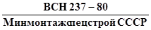
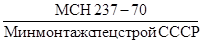
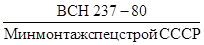
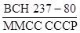
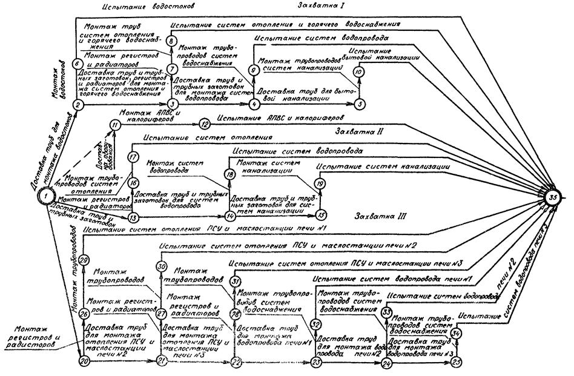
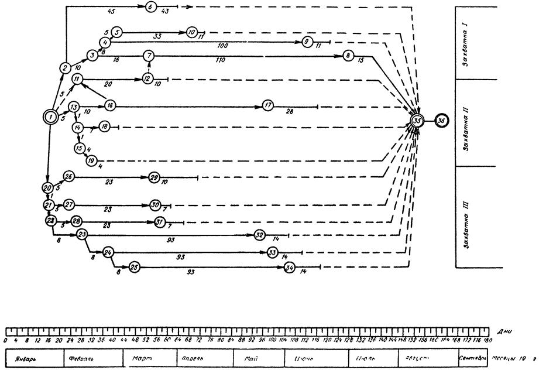
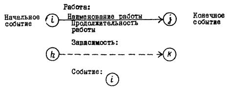
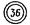

МИНИСТЕРСТВО
МОНТАЖНЫХ И СПЕЦИАЛЬНЫХ
СТРОИТЕЛЬНЫХ РАБОТ СССР
УТВЕРЖДАЮ
Заместитель
министра монтажных
и специальных строительных
работ СССР
___________________ Брюнин В.Ф.
27 декабря 1979 г.
ИНСТРУКЦИЯ
ПО РАЗРАБОТКЕ ПРОЕКТОВ ПРОИЗВОДСТВА РАБОТ
НА МОНТАЖ ВНУТРЕННИХ
САНИТАРНО-ТЕХНИЧЕСКИХ УСТРОЙСТВ

Согласовано с Госстроем СССР.
Письмо Госстроя СССР от 16 октября 1981 г. № 1-2164.
Центральное бюро
научно-технической информации
Москва 1983
СОДЕРЖАНИЕ
Инструкция содержит методику составления ППР, устанавливает требования к исходным данным, составу, содержанию и оформлению ППР.
С
введением в действие настоящей инструкции утрачивают силу "Указания по
составлению и утверждению проектов производства работ на монтаж внутренних
санитарно-технических устройств 
Инструкция разработана ГПИ Проектпромвентиляция.
|
Министерство монтажных и специальных строительных работ СССР (Минмонтажспецстрой СССР) |
Ведомственные строительные нормы |
 |
|
Инструкция по разработке проектов производства работ на монтаж внутренних санитарно-технических устройств |
Взамен
"Указаний по составлению и утверждению проектов производства работ на
монтаж внутренних санитарно-технических устройств", утвержденных
Главпромвентиляцией |
1.1. Инструкция составлена в дополнение к "Инструкции по разработке проектов организации строительства и проектов производства работ" СН 47-74, утвержденной Госстроем СССР, в целях отражения специфики монтажа внутренних санитарно-технических устройств.
1.2. Проекты производства работ (ППР) разрабатывают в целях определения наиболее эффективных методов, способствующих снижению себестоимости и трудоемкости монтажных работ, сокращению их продолжительности, улучшению качества монтажа и обеспечению безопасности труда.
1.3. Инструкция устанавливает требования к составу, содержанию, порядку разработки и утверждения ППР.
1.4. ППР следует разрабатывать с учетом применения прогрессивных методов и средств производства работ, обеспечивающих высокое качество, минимальные продолжительность, трудоемкость и стоимость.
|
Внесены ГПИ Проектпромвентиляция |
Утверждены Минмонтажспецстроем
СССР |
Срок введения
в действие |
2.1. ППР - руководящий документ для подготовки и производства работ по монтажу внутренних санитарно-технических систем на конкретных объектах.
2.2. ППР по монтажу внутренних санитарно-технических систем могут быть двух видов: полные и сокращенные.
Полные ППР составляют в случаях:
а) сложных технических решений санитарно-технических систем;
б) большого объема санитарно-технических работ (при сметной стоимости санитарно-технических работ более 80 тыс. руб. для первого территориального района или более 5 тыс. м трубопроводов);
в) выполнения санитарно-технических работ в крайне сжатые сроки или параллельно с выполнением смежных работ;
г) применения на объекте уникального санитарно-технического или технологического оборудования, связанного с санитарно-техническими системами;
д) сложных, стесненных или связанных с повышенной опасностью условий производства работ по монтажу санитарно-технических систем.
На все остальные объекты составляют сокращенные ППР.
ППР разрабатывают группы подготовки производства монтажных организаций. Полные ППР могут разрабатывать проектно-технологические и специализированные проектные организации - по заказу монтажных организаций (за счет накладных расходов в строительстве монтажных организаций).
2.3. Стоимость разработки ППР, выполняемых проектными организациями, определяется по "Прейскуранту стоимости разработки проектов производства работ по монтажу внутренних санитарно-технических устройств".
2.4. Монтажная организация передает проектной организации одновременно с заказом на разработку ППР следующие материалы:
утвержденное главным инженером монтажной организации задание на разработку ППР, содержащее сведения об объеме и сроках разработки;
рабочий проект и сметную документацию на объект в одном экземпляре;
раздел проекта организации строительства объекта, отражающий производство внутренних санитарно-технических работ (при его наличии);
утвержденный заказчиком и генподрядчиком календарный план или директивный график строительства;
строительный генеральный план объекта (или выкопировку из него);
монтажные чертежи.
2.5. Основные технические решения, закладываемые в ППР, обсуждают на техническом совете монтажной организации.
2.6. ППР может быть разработан и утвержден поэтапно с выдачей в согласованные сроки монтажной организации-заказчику отдельных частей.
2.7. ППР утверждает главный инженер монтажной организации, видавшей задание на ППР, не поздней чем за два месяца до начала монтажных работ.
Перед утверждением принятые в ППР сроки и основные решения по производству монтажных работ должны быть согласованы монтажной организацией с генподрядной.
ППР по монтажу внутренних санитарно-технических систем в действующих цехах должен быть согласован с дирекцией предприятия до утверждения.
2.8. Отступления от ППР в части методов монтажа допускаются по согласованию с разработчиком.
2.9. При возникновении в процессе работ изменений сроков, условий монтажа, обеспечения ресурсами и т.п. монтажная организация вносит в ППР коррективы с проведением соответствующих согласований.
3.1. Исходные данные для разработки ППР:
утвержденное задание;
рабочий проект и сметная документация на объект;
монтажные чертежи;
раздел проекта организации строительства объекта, отражающий производство внутренних санитарно-технических работ (при наличии его);
утвержденный заказчиком и генеральным подрядчиком календарный план или директивный график строительства;
строительный генеральный план объекта или его элемент (при реконструкции и расширении промышленных предприятий на строительном генеральном плане должно быть указано расположения существующих инженерных сетей и коммуникаций (с выделением действующих), места врезки новых сетей и коммуникаций в действующие, указаны проезды, используемые монтажниками);
сведения о количестве и типах намечаемых к использованию монтажной организацией машин, механизмов и транспортных средств;
данные о предприятиях - поставщиках трубных заготовок и изделий;
сведения о сроках и порядке поставки предусмотренного проектом санитарно-технического оборудования (или о его замене);
типовые технологические карты на монтаж внутренних санитарно-технических устройств;
действующие нормативные документы;
глава СНиП по правилам производства и приемки работ санитарно-технического оборудования зданий и сооружений;
глава СНиП по технике безопасности в строительстве;
нормативные документы по организации строительства;
утвержденные общесоюзные или ведомственные укрупненные показатели расхода материально-технических ресурсов;
единые нормы и расценки на монтажные работы (ЕНиР).
3.2. Задание на разработку ППР должно быть составлено по форме 1 приложения 1.
4.1. В состав полного ППР должны входить:
пояснительная записка, содержащая сведения об исходных данных проекта и обоснования принятых решений; требования к строительной готовности объекты для производства монтажных работ;
мероприятия по производству работ и организации работ методом бригадного подряда на основе хозяйственного расчета; указания по технике безопасности; мероприятия по пожарной безопасности, предусматривающие порядок выполнения открытых огневых работ, требования к размещению горючих и взрывоопасных материалов; мероприятия по осуществлению контроля и оценки качества монтажных работ;
основные технико-экономические показатели ППР (форма 2 приложения 1);
сводная ведомость трудовых затрат и заработной платы (форма 3 приложения 1);
календарный план производства работ по объекту (форма 4 приложения 1) или локальный сетевой график (приложения 2 и 3);
сводный график потребности в рабочих кадрах по объекту (форма 5 приложения 1);
график поставки санитарно-технического оборудования на объект, (форма 6 приложения 1);
график поставки санитарно-технических трубных заготовок, узлов и изделий на объект (форма 7 приложения 1);
ведомость основных и вспомогательных материалов (форма 8 приложения 1);
ведомости потребности в инструменте, приспособлениях и механизмах, не учтенных в утвержденном наборе на бригаду (форма 9 приложения 1);
производственные калькуляции трудовых затрат и заработной платы на монтаж внутренних санитарно-технических систем (форма 10 приложения 1);
элемент стройгенплана с расположением приобъектных постоянных и временных транспортных путей, монтажных кранов, складов, площадок для складирования санитарно-технического оборудования, трубных заготовок, узлов и изделий, временных зданий и помещений монтажной организации (производственных и административно-бытовых);
типовые технологически корты на монтаж внутренних санитарно-технических устройств, привязанные к местным условиям;
технологические карты на сложные работы и на работы, выполняемые новыми методами, не предусмотренными существующими типовыми технологическими картами.
4.2. В состав сокращенного ППР должны входить:
календарный план работ в виде линейного графика;
схемы производства основных видов работ или перечень типовых технологических карт, примененных в проекте;
краткая пояснительная записка, содержащая указания по производству работ, технике безопасности и пожарной безопасности.
4.3. По договоренности организации - заказчика ППР с организацией-разработчиком в ППР могут быть включены дополнительные разделы, не предусмотренные пп. 4.1 и 4.2 настоящей инструкции (за дополнительную оплату).
5.1. Перед составлением ППР выполняют следующие подготовительные работы:
сбор исходных данных (см. раздел 3);
изучение рабочего проекта и сметной документации;
определение смежных строительно-монтажных работ, выполняемых другими организациями до монтажа внутренних санитарно-технических систем;
ознакомление с объектом.
5.2. По окончании подготовительных работ разрабатывают ППР в составе, предусмотренном пп. 4.1 и 4.2.
5.3. При рассмотрении нескольких вариантов производства работ определяют экономическую эффективность в соответствии с "Инструкцией по определению экономической эффективности использования в строительстве новой техники, изобретений и рационализаторских предложений" СН 509-78.
5.4. Раздел "Основные технико-экономические показатели ППР" составляют по форме 2 приложения 1 настоящей инструкции.
Сметную стоимость монтажных работ определяют по смете, уточненной по монтажным чертежам; общее количество монтируемых трубопроводов - по рабочим и монтажным чертежам; трудоемкость монтажных работ - путем составления производственных калькуляций трудовых затрат на основные работы по монтажу каждого вида внутренних санитарно-технических устройств отдельно.
Трудоемкость вспомогательных и транспортных работ принимают в размере 30% трудовых затрат на основные монтажные работы.
Дневную выработку одного рабочего в физическом выражении определяют делением количества трубопроводов на трудоемкость монтажных работ, в денежном - делением сметной стоимости монтажных работ на трудоемкость (приводится для организаций, не перешедших на планирование по нормативной чистой продукций). Эти показатели определяют по объекту в целом и отдельно по каждому виду внутренних санитарно-технических устройств. Трудозатраты на монтаж одного метра трубопроводов определяют делением трудоемкости монтажа каждого вида внутренних санитарно-технических устройств на длину трубопроводов.
5.5. Производственные калькуляции трудовых затрат составляют на каждый вид санитарно-технических устройств. При составлении калькуляций следует пользоваться ЕНиР, ВНиР и местными нормами, утвержденными в установленном порядке. Производственные калькуляции должны быть отпечатаны на бланках нарядов (форма 10 приложения 1) с заполнением граф 4-8. Графы 9-11 используют для отметок о фактическом выполнении работ.
5.6. Трудоемкость монтажа внутренних санитарно-технических устройств, определенную путем составления производственных калькуляций, заносят в "Сводную ведомость трудовых затрат и заработной платы", составленную по форме 3 приложения 1.
5.7. В ППР мероприятия по производству работ должны содержать конкретные рекомендации о способах выполнения работ, отдельных процессов и их последовательность.
Методы производства работ должны быть выбраны с учетом скорейшего и безопасного их выполнения, максимального сокращения ручного труда, широкого использования средств механизации.
При реконструкции и расширении промышленных предприятий ППР составляют с учетом особенностей производства работ на действующих предприятиях, увязывают выполнение санитарно-технических работ со смежными (строительными, электротехническими и др.), согласовывают со всеми исполнителями работ и руководством предприятия.
5.8. В мероприятиях по производству работ должны быть предусмотрены указания по осуществлению контроля за качеством поступающих на объект заготовок и за качеством монтажных работ.
5.9. При составлений указаний по производству работ следует использовать действующие типовые технологические карты на монтаж внутренних санитарно-технических устройств. В отдельных случаях может возникнуть необходимость в привязке некоторых типовых технологических карт к конкретным условиям данного объекта.
Привязка типовой технологической карты к местным условиям заключается в уточнении объемов работ, средств механизации и потребности в трудовых и материальных ресурсах, а также в уточнении схемы организации процесса соответственно фактическим габаритам той части здания, к которой привязывается технологическая карта. При этом методы выполнения работ, принятые в типовой технологической карте, изменению не подлежат.
5.10. Календарный план производства работ, составленный по форме 4 приложения 1 устанавливает:
сроки и продолжительность монтажных работ на объекте с разбивкой по отделениям, цехам, захваткам (зонам);
последовательность выполнения монтажных работ.
Календарный план производства работ при реконструкции и расширении промышленных предприятий должен быть согласован с начальником производственного цеха, главным энергетиком предприятия или главным механиком (вопросы отключения электроэнергии, теплоносителя, воды и т.п.), местной санитарной инспекцией (при необходимости) и инженером по технике безопасности.
5.11. Сроки и общую продолжительность работ по монтажу внутренних санитарно-технических устройств по объекту в целом и по отдельным его захваткам определяют из совмещенного календарного плана строительства или директивного графика, утвержденных генподрядчиком и заказчиком.
Продолжительность реконструкции следует определять на основе осуществления работ индустриальными методами при максимально возможном совмещении строительных, санитарно-технических, электротехнических и других работ, сокращения сроков остановки технологических процессов на реконструируемом предприятии и ввода в действие производства, цехов, установок и агрегатов.
5.12. В графе "Наименование и последовательность выполнения работ" календарного плана отдельными строками должны быть выделены работы по испытанию санитарно-технических устройств.
5.13. Трудоемкость монтажных работ при составлении календарного плана определяют по производственным калькуляциям трудовых затрат.
5.14. При отсутствии совмещенного календарного плана производства работ или директивного графика строительства объекта, а также невозможности определения конкретных сроков их выполнения вместо календарного плана составляют локальный сетевой график, предусматривающий технологическую последовательность выполнения монтажа с учетом выполнения необходимых строительных, электромонтажных и других работ. При необходимости локальный сетевой график (приложение 2) может быть привязан к конкретным календарным срокам (приложение 3).
5.15. Для определения необходимого количества рабочих по профессиям и их передвижения при производстве монтажных работ в установленные календарным планом сроки составляется "Сводный график потребности в рабочих кадрах" (форма 5 приложения 1).
Количество рабочих рассчитывается по трудоемкости, определенной в календарном плане. Необходимые профессии рабочих определяются, исходя из состава звена, заложенного в соответствующих сборниках ЕНиР, ВНиР и местных нормах, утвержденных в установленном порядке.
5.16. График поставки санитарно-технических трубных заготовок и изделий на объект составляют по форме 7 приложения 1. Графы 1-5 заполняют на основании рабочих и монтажных чертежей. Сроки поставки трубных заготовок и изделий должны опережать на 5-7 дней сроки выполнения монтажных работ, предусмотренные календарным планом или сетевым графиком.
На основании этих же данных составляют график поставки оборудования (форма 6 приложения 1).
5.17. Потребность в основных и вспомогательных материалах (форма 8 приложения 1) определяют на основании объемов работ по рабочим или монтажным чертежам с учетом действующих норм расхода материалов. В ведомость включают основные материалы (трубы, нагревательные приборы, арматуру, санитарно-технические приборы и т.д.) и вспомогательные (болты с гайками, шурупы, дюбели, прокладочные и уплотнительные материалы, электроды, присадочную проволоку и т.д.).
5.18. Перечень инструмента, приспособлений и механизмов, требующихся для производства работ (форма 9 приложения 1) составляют на основании технологических карт, примененных в данном проекте, а их количество определяют в зависимости от объема и продолжительности работ, а также количества рабочих.
5.19. Безопасность монтажных работ на объекте обеспечивают конкретными указаниями по производству работ, закладываемыми в ППР, и строгим соблюдением безопасных методов и приемов труда, предусмотренных "Типовыми технологическими картами".
В разделе "Указания по технике безопасности" должны быть разработаны мероприятия, специфические для данного объекта.
ППР следует выпускать в двух альбомах формата №11 (размером 297´210 мм).
Содержание альбомов:
Альбом 1. Проект производства работ.
Альбом 2. Производственные калькуляции трудовых затрат и заработной платы.
Альбом 1 выдается заказчику в трех экземплярах, альбом 2 - в двух.
7.1. Надзор за выполнением сложных монтажных работ осуществляют в случаях, указанных в случаях, указанных в заданиях на разработку ППР.
7.2. Надзор осуществляет организация, разработавшая ППР.
7.3. Лица, осуществляющие надзор, при необходимости могут вносить изменения в ППР. Изменения можно вносить отдельным письмом или записью в соответствующих документах тушью или чернилами. Мелкие замечания или указания, не изменяющие основные решения ППР, вносят в журнал производства монтажных работ.
7.4. Все изменения, внесенные в ППР в процессе надзора, должны быть отражены в контрольном экземпляре, хранящемся в архиве организации - разработчика ППР.
Форма 1
|
СОГЛАСОВАНО ____________________________________ (должность) ____________________________________ ____________________________________ (наименование организации) ____________________________________ (подпись, фамилия, инициалы) ____________________________________ (дата) |
УТВЕРЖДАЮ ____________________________________ (должность) ____________________________________ ____________________________________ (наименование организации) ____________________________________ (подпись, фамилия, инициалы) ____________________________________ (дата) |
||||
|
ЗАДАНИЕ ___________________________________________________________________________ (наименование организации - разработчика ППР) Разработать ППР на монтаж систем ____________________________________________ ___________________________________________________________________________ ___________________________________________________________________________ 1. Наименование объекта и пункта строительства ________________________________ ___________________________________________________________________________ 2. Монтирующая организация _________________________________________________ ___________________________________________________________________________ 3. Этапы строительства ______________________________________________________ ___________________________________________________________________________ 4. Календарный план или директивный график монтажа ___________________________ ___________________________________________________________________________ 5. Исходные данные _________________________________________________________ ___________________________________________________________________________ 6. Особые условия монтажа ___________________________________________________ ___________________________________________________________________________ ___________________________________________________________________________ 7. Количество, типы и грузоподъемность машин, механизмов и транспортных средств, выделяемых для монтажных работ на объекте ___________________________________ ___________________________________________________________________________ ___________________________________________________________________________ ___________________________________________________________________________ ___________________________________________________________________________ 8. Рекомендуемые монтажной организацией способы производства работ ____________ ___________________________________________________________________________ ___________________________________________________________________________ ___________________________________________________________________________ ___________________________________________________________________________ 9. Предприятия - поставщики трубных заготовок и изделий ________________________ ___________________________________________________________________________ ___________________________________________________________________________ ___________________________________________________________________________ 10. Сведения о поставке проектного санитарно-технического оборудования или о его замене _____________________________________________________________________ ___________________________________________________________________________ ___________________________________________________________________________ ___________________________________________________________________________ 11. Сроки поставки санитарно-технического оборудования, трубных заготовок, узлов и деталей на объект ___________________________________________________________ ___________________________________________________________________________ ___________________________________________________________________________ ___________________________________________________________________________ ___________________________________________________________________________ 12. Состав бригады (звена), занятой на монтаже трубопроводов, заготовок, изделий и санитарно-технического оборудования _________________________________________ ___________________________________________________________________________ ___________________________________________________________________________ ___________________________________________________________________________ ___________________________________________________________________________ 13. Объем работ _____________________________________________________________ ___________________________________________________________________________ ___________________________________________________________________________ 14. Вид ППР (полный, сокращенный) ___________________________________________ 15. Указания о разработке
дополнительных разделов ППР, не предусмотренное п.п. 4.1 и 4.2  ___________________________________________________________________________ 16. Надзор за выполнением работ ______________________________________________ 17. Сроки разработки ППР и этапы _____________________________________________ ___________________________________________________________________________ Составитель задания
|
|||||
Форма 2
ОСНОВНЫЕ ТЕХНИКО-ЭКОНОМИЧЕСКИЕ ПОКАЗАТЕЛИ ППР
|
Технико-экономический показатель ППР |
Вид системы |
||||
|
отопление |
водопровод (хозяйственно-питьевой, производственный противопожарный) |
канализация |
|||
|
бытовая |
производственная |
водостоки |
|||
|
1. Сметная стоимость монтажных работ, тыс. руб. 2. Общее количество монтируемых трубопроводов, м 3. Трудоемкость работ, чел.-дней 4. Дневная выработка одного рабочего, м смонтированных трубопроводов 5. Дневная выработка одного рабочего, руб. 6. Трудозатраты на монтаж 1 м трубопроводов, чел.-дней |
|||||
Форма 3
СВОДНАЯ ВЕДОМОСТЬ ТРУДОВЫХ ЗАТРАТ И ЗАРАБОТНОЙ ПЛАТЫ
|
Наименование санитарно-технических устройств |
Количество трубопроводов, м |
Количество оборудования, шт. |
Трудозатраты на монтаж, чел.-дней |
Заработная плата за монтаж, руб. |
|||
|
трубопроводов, заготовок, изделий |
сантех-оборудования |
всего |
трубопроводов |
оборудования |
|||
|
1 |
2 |
3 |
4 |
5 |
6 |
7 |
8 |
КАЛЕНДАРНЫЙ ПЛАН ПРОИЗВОДСТВА РАБОТ ПО ОБЪЕКТУ
|
Наименование и последовательность выполнения работ |
Объем работ |
Трудоемкость работ, чел.-дней |
Количество рабочие, чел. |
Продолжительность выполнения работ, дней |
Предшествующие смежные работы (строительные, электромонтажные и т.д.) |
|
|
ед. нам. |
количество |
|||||
|
1 |
2 |
3 |
4 |
5 |
6 |
7 |
Форма 4
|
Сроки выполнения подготовительных работ: месяц 19 ___ г. |
Сроки выполнения монтажных работ: месяц 19 ___ г. |
||||||||||||||||||||||
|
I |
II |
III |
IV |
V |
VI |
VII |
VIII |
IX |
X |
XI |
XII |
I |
II |
III |
IV |
V |
VI |
VII |
VIII |
IX |
X |
XI |
XII |
|
8 |
9 |
10 |
11 |
12 |
13 |
14 |
15 |
16 |
17 |
16 |
19 |
20 |
21 |
22 |
23 |
24 |
25 |
26 |
27 |
28 |
29 |
30 |
31 |
Форма 5
СВОДНЫЙ ГРАФИК ПОТРЕБНОСТИ В РАБОЧИХ КАДРАХ ПО ОБЪЕКТУ
|
Наименование профессии |
Ед. изм. |
Количество |
Среднесуточная потребность в рабочих по месяцам строительства |
|||||||||||
|
I |
II |
III |
IV |
V |
VI |
VII |
VIII |
IX |
X |
XI |
XII |
|||
|
1 |
2 |
3 |
4 |
5 |
6 |
7 |
8 |
9 |
10 |
11 |
12 |
13 |
14 |
15 |
Форма 6
ГРАФИК ПОСТАВКИ САНИТАРНО-ТЕХНИЧЕСКОГО ОБОРУДОВАНИЯ НА ОБЪЕКТ
|
Наименование оборудования |
Ед. изм. |
Количество |
Срок поставки по месяцам 19 ___ г. |
Примечание |
||||||||||||
|
по проекту |
согласована замена |
I |
II |
III |
IV |
V |
VI |
VII |
VIII |
IX |
X |
XI |
XII |
|||
|
1 |
2 |
3 |
4 |
5 |
6 |
7 |
8 |
9 |
10 |
1 |
12 |
13 |
14 |
15 |
16 |
17 |
Примечание: Графу 2 заполняет линейный техперсонал.
Форма 7
ГРАФИК ПОСТАВКИ САНИТАРНО-ТЕХНИЧЕСКИХ ТРУБНЫХ ЗАГОТОВОК, УЗЛОВ И ИЗДЕЛИЙ НА ОБЪЕКТ
|
Наименование системы |
Наименование изделия |
Ед. изм. |
Количество |
Техническая документация |
Сроки поставки: месяц 19 ___ г. |
Примечание |
|||||||||||
|
I |
II |
III |
IV |
V |
VI |
VII |
VIII |
IX |
X |
XI |
XII |
||||||
|
1 |
2 |
3 |
4 |
5 |
6 |
7 |
8 |
9 |
10 |
11 |
12 |
13 |
14 |
15 |
16 |
17 |
18 |
Форма 8
ВЕДОМОСТЬ ОСНОВНЫХ И ВСПОМОГАТЕЛЬНЫХ МАТЕРИАЛОВ
|
Наименование материала |
ГОСТ, марка |
Ед. изм. |
Количество |
Масса, кг |
|
|
единицы |
общая |
||||
|
1 |
2 |
3 |
4 |
5 |
6 |
Форма 9
ВЕДОМОСТЬ ПОТРЕБНОСТИ В ИНСТРУМЕНТЕ, ПРИСПОСОБЛЕНИЯХ И МЕХАНИЗМАХ, НЕ УЧТЕННЫХ В УТВЕРЖДЕННОМ НАБОРЕ НА БРИГАДУ
|
Наименование инструмента, приспособления, механизма |
ГОСТ, ОСТ, ТУ или чертеж, тип, марка |
Техническая характеристика |
Ед. изм. |
Количество |
|
1 |
2 |
3 |
4 |
5 |
Форма 10
ПРОИЗВОДСТВЕННАЯ КАЛЬКУЛЯЦИЯ ТРУДОВЫХ ЗАТРАТ И ЗАРАБОТНОЙ ПЛАТЫ НА МОНТАЖ ВНУТРЕННИХ САНИТАРНО-ТЕХНИЧЕСКИХ СИСТЕМ
Наряд № _________ от «______№ ___________________19___ г.
|
____________________________________ месяц _______________________________ № бригады, участка ___________________ Шифр объекта _______________________ |
Объект строительства _________________ Бригада тов. _________________________ Начало работ ________________________ Окончание работ _____________________ |
|
||||||||||
|
§ Единых норм и расценок |
Описание работ и условий производства |
Ед. изм. |
Задано |
Исполнено |
|
|||||||
|
количество работ |
на единицу |
на весь период |
количество работ |
норма времени, чел.-ч |
сумма, руб. |
|
||||||
|
норма времени, чел.-ч |
расценка, руб. |
|||||||||||
|
норма времени, чел.-ч |
сумма, руб. |
|
||||||||||
|
1 |
2 |
3 |
4 |
5 |
6 |
7 |
8 |
9 |
10 |
11 |
|
|
|
||||||||||||


ЭЛЕМЕНТЫ ЛОКАЛЬНОГО СЕТЕВОГО ГРАФИКА:
работа - процесс, требующий для его выполнения затрат времени и ресурсов;
ожидание - технологический или организационный перерыв между работами, необходимый при выбранной схеме производства работ; процесс, требующий только затрат времени;
зависимость (фиктивная работа) - элемент, который вводится для отражения правильной взаимосвязи между работами; не требует затрат времени и труда исполнителей;
событие - результат выполнения (факт окончания) одной или нескольких работ, необходимый и достаточный для начала последующих работ.
Работа и ожидание изображаются сплошной стрелкой с указанием над стрелкой ее продолжительности или ожидания.
Зависимость (фиктивная работа) изображается пунктирной стрелкой.
Событие изображается кружком и нумеруется.
Работа, а также ожидание и зависимость шифруется номерами двух ограничивающих событий, начального и конечного:

- исходное событие сетевого графика.
